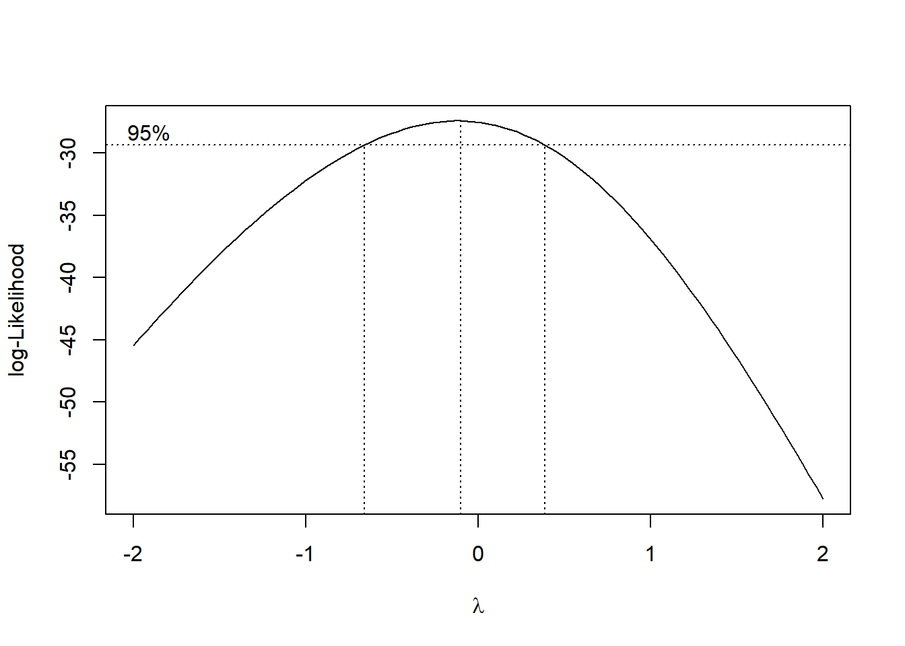

library(gsheet)
library(tidyverse)
sev <- gsheet2tbl("https://docs.google.com/spreadsheets/d/1D_tSkv6calLSIxxzwG_qiMH3cBlG1Y0B/edit#gid=238991737")
sev_inicial <- sev[1:80, ]Avaliando a eficácia do produto nos estágios iniciais da doença
Vamos criar um filtro para a severidade entre os 37 e 60 dias após a emergência
AUDPC para a epidemia inicial
library(epifitter)
curve_inicial <- sev_inicial |>
group_by(Tratamentos, Blocos) |>
summarise(AACPD = AUDPC(DAE, Sev))Anova para essa variável que acabamos de criar:
aov_aacpd.i <- aov(AACPD ~ Tratamentos + Blocos, data = curve_inicial)
anova(aov_aacpd.i)Analysis of Variance Table
Response: AACPD
Df Sum Sq Mean Sq F value Pr(>F)
Tratamentos 3 147187 49062 54.7031 6.732e-07 ***
Blocos 1 5374 5374 5.9917 0.03237 *
Residuals 11 9866 897
---
Signif. codes: 0 '***' 0.001 '**' 0.01 '*' 0.05 '.' 0.1 ' ' 1Checando as premissas:
library(performance)
check_normality(aov_aacpd.i)OK: residuals appear as normally distributed (p = 0.627).check_heteroscedasticity(aov_aacpd.i)Warning: Heteroscedasticity (non-constant error variance) detected (p = 0.031).Transformando novamente:
library(MASS)
b <- boxcox(lm(curve_inicial$AACPD+0.1 ~ 1))
lambda <- b$x[which.max(b$y)]
curve_inicial$AACPD_2 <- (curve_inicial$AACPD ^ lambda - 1) / lambdaANOVA para os dados transformados
aov_aacpd.ii <- aov(AACPD_2 ~ Tratamentos + Blocos, data = curve_inicial)
anova(aov_aacpd.ii)Analysis of Variance Table
Response: AACPD_2
Df Sum Sq Mean Sq F value Pr(>F)
Tratamentos 3 14.4629 4.8210 234.5861 3.003e-10 ***
Blocos 1 0.0502 0.0502 2.4416 0.1464
Residuals 11 0.2261 0.0206
---
Signif. codes: 0 '***' 0.001 '**' 0.01 '*' 0.05 '.' 0.1 ' ' 1Checando as premissas:
check_normality(aov_aacpd.ii)OK: residuals appear as normally distributed (p = 0.221).check_heteroscedasticity(aov_aacpd.ii)OK: Error variance appears to be homoscedastic (p = 0.297).Testes de médias
library(emmeans)
medias_aacpd.i <- emmeans(aov_aacpd.ii, ~ Tratamentos)
medias_aacpd.i Tratamentos emmean SE df lower.CL upper.CL
Controle 4.20 0.0717 11 4.04 4.36
F + Produto 2.00 0.0717 11 1.84 2.16
Fungicida (F) 2.16 0.0717 11 2.00 2.31
Produto 3.68 0.0717 11 3.52 3.84
Confidence level used: 0.95 pwpm(medias_aacpd.i) Controle F + Produto Fungicida (F) Produto
Controle [4.20] <.0001 <.0001 0.0016
F + Produto 2.201 [2.00] 0.4393 <.0001
Fungicida (F) 2.043 -0.158 [2.16] <.0001
Produto 0.520 -1.681 -1.523 [3.68]
Row and column labels: Tratamentos
Upper triangle: P values adjust = "tukey"
Diagonal: [Estimates] (emmean)
Lower triangle: Comparisons (estimate) earlier vs. laterlibrary(multcomp)
cld(medias_aacpd.i, Letters = letters) Tratamentos emmean SE df lower.CL upper.CL .group
F + Produto 2.00 0.0717 11 1.84 2.16 a
Fungicida (F) 2.16 0.0717 11 2.00 2.31 a
Produto 3.68 0.0717 11 3.52 3.84 b
Controle 4.20 0.0717 11 4.04 4.36 c
Confidence level used: 0.95
P value adjustment: tukey method for comparing a family of 4 estimates
significance level used: alpha = 0.05
NOTE: If two or more means share the same grouping symbol,
then we cannot show them to be different.
But we also did not show them to be the same. Os tratamentos são agrupados em três grupos distintos (a, b, c) com base nas comparações múltiplas de Tukey. Tratamentos que compartilham a mesma letra não são significativamente diferentes entre si.